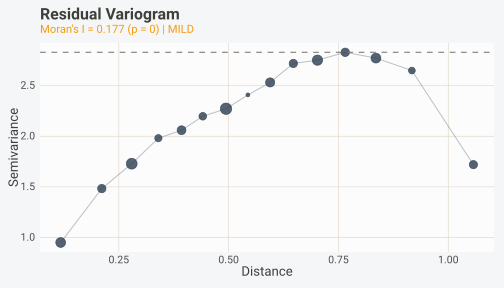
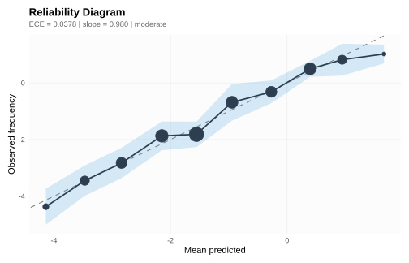
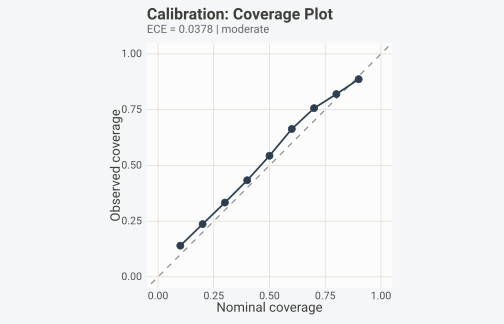
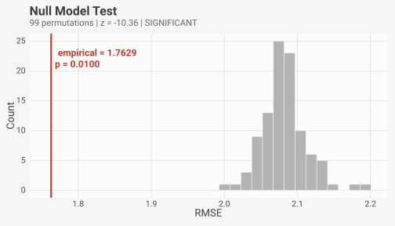
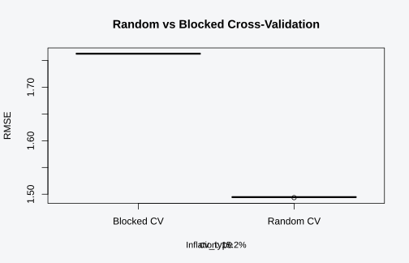
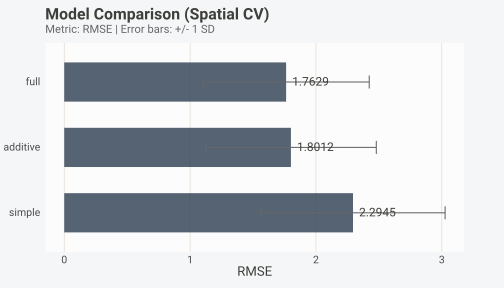
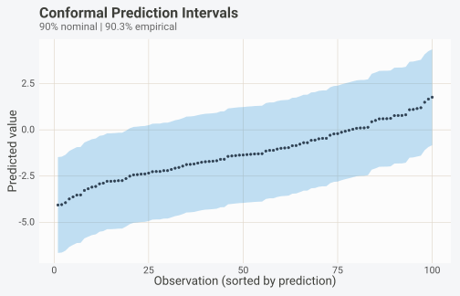
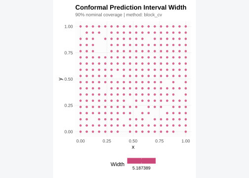
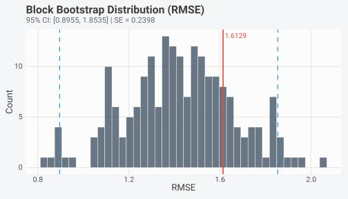
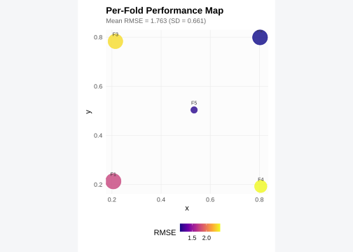

Installation
install.packages("pak") # development version
pak::pak("gcol33/BORG")Setup: simulating spatial data and fitting a model
Before running any diagnostics, we need a dataset with known spatial
structure and a fitted model we can interrogate. The
borg_simulate() function generates synthetic datasets with
controlled dependencies, which makes it possible to know in advance how
much metric inflation to expect. Throughout this vignette we use a
spatial simulation with moderate autocorrelation and moderate signal
strength. The simulation places 300 observations on a spatial grid,
generates five autocorrelated predictors, and constructs a response that
depends linearly on those predictors plus spatially correlated
noise.
sim <- borg_simulate(
n = 300,
type = "spatial",
n_predictors = 5,
signal_strength = 0.3,
autocorrelation = 0.5,
seed = 42
)
d <- sim$data
str(d)
#> 'data.frame': 300 obs. of 8 variables:
#> $ x : num 0.7059 0.8235 0.4706 0.0588 0.6471 ...
#> $ y : num 0.118 1 0.471 0.235 0.706 ...
#> $ x1 : num -1.068 0.373 -0.381 0.362 -0.278 ...
#> $ x2 : num 0.224 3.236 1.289 -0.915 0.798 ...
#> $ x3 : num -0.663 -0.353 0.52 -0.799 -1.797 ...
#> $ x4 : num -0.529 -0.278 -0.817 -0.747 0.141 ...
#> $ x5 : num -0.0583 -0.9651 -0.0278 -0.3498 -0.3837 ...
#> $ y.1: num 3.895 -3.378 -3.591 0.969 -1.999 ...Because the coordinate columns are named x and
y and the response variable is also named y,
the resulting data frame renames the response to y.1. This
is a deliberate design choice in borg_simulate() to avoid
column name collisions. We fit a linear model using only the five
predictors, then generate blocked cross-validation folds that respect
the spatial dependency structure. These folds will be reused across most
of the diagnostics that follow.
model <- lm(y.1 ~ x1 + x2 + x3 + x4 + x5, data = d)
# Blocked spatial CV folds
cv <- borg_cv(d, coords = c("x", "y"), target = "y.1", v = 5)The true R-squared for this simulation is 0.3. Any metric estimate that substantially exceeds this value is evidence of inflation caused by leakage through the cross-validation scheme.
Quick diagnostic check
The fastest way to audit a dataset for leakage risks is
borg_check(). This single function runs the full BORG
pipeline internally: it diagnoses dependency structure, generates
blocked CV folds, validates the split, and optionally inspects a fitted
model. The result is a tidy data frame where each row represents one
detected risk, with columns for the risk type, severity level, a
plain-language description, the number of affected observations, and the
source object that triggered the detection.
chk <- borg_check(d, target = "y.1", coords = c("x", "y"))
chk
#> BORG Quick Check
#> Dependency: spatial | Severity: moderate
#> Recommended CV: spatial_block
#> No risks detected.The severity column classifies each risk into one of three
categories: "hard_inflation" indicates a problem that will
inflate metrics substantially, such as test observations appearing in
the training set or a feature that directly encodes the response.
"soft_inflation" flags a subtler issue like spatial
autocorrelation that leaks through random CV folds but may not cause
dramatic inflation in every case. "info" marks observations
that the system flagged for awareness but that do not necessarily
compromise evaluation.
Zero rows means all tests passed. No guarantee of zero leakage, but the check covers everything BORG can detect: spatial and temporal autocorrelation, clustered observations, index overlap between train and test sets, target leakage via proxy features, and preprocessing leakage from shared normalisation statistics.
You can also pass a fitted model to borg_check() to run
model-level inspections in the same call. This checks whether the model
object carries preprocessing artefacts or formula terms that reference
the target through a proxy variable.
chk_model <- borg_check(d, model = model, target = "y.1", coords = c("x", "y"))
chk_model
#> BORG Quick Check
#> Dependency: spatial | Severity: moderate
#> Recommended CV: spatial_block
#> No risks detected.The attributes of the returned object contain the full diagnosis, the generated CV folds, and the raw risk list. You can extract these for more detailed inspection if the summary table raises questions.
# Access the underlying BorgDiagnosis
diag <- attr(chk, "diagnosis")
diag@dependency_type
#> [1] "spatial"
diag@severity
#> [1] "moderate"
diag@recommended_cv
#> [1] "spatial_block"For non-stopping diagnostics on a model object alone (without running
the full pipeline), use borg_inspect(). Unlike
borg(), which throws errors on hard violations,
borg_inspect() returns a BorgRisk object that
you can examine at your own pace without interrupting a script.
Residual diagnostics
A model might pass all pre-fit leakage checks and still produce
biased predictions if it fails to capture the spatial process in the
data. borg_check_residuals() tests whether the residuals
from a fitted model retain spatial autocorrelation. If they do, the
model has left spatial signal on the table, and predictions at new
locations will be systematically biased toward the values of their
neighbours in the training set.
The function accepts either a fitted model object (anything with a
residuals() method) or a raw numeric vector of residuals.
When given a model, it extracts residuals automatically. It then
computes Moran’s I on those residuals using an inverse-distance weight
matrix derived from the spatial coordinates. The p-value comes from a
randomization test that permutes the residuals across locations.
res_check <- borg_check_residuals(model, d, coords = c("x", "y"))
res_check
#> BORG Residual Autocorrelation Check
#> Moran's I: 0.1768 (p = 0)
#> Assessment: MILD
#> WARNING: Residuals have significant spatial autocorrelation.
#> The model has not fully captured the spatial process.Three quantities are reported. First, Moran’s I itself: a value near
zero indicates no spatial pattern in the residuals, positive values
indicate clustering of similar residuals, and negative values (rare in
practice) indicate spatial repulsion. Second, the p-value from the
randomization test. Third, an overall assessment that translates the
test result into a plain-language verdict: "clean" means
the residuals show no statistically significant spatial structure,
"mild" means Moran’s I is significant but below 0.3, and
"strong" means Moran’s I exceeds 0.3, indicating that the
model is missing a spatial effect of practical importance.
The 0.3 threshold is conservative. Even a Moran’s I of 0.15 can bias predictions in interpolation-heavy workflows, so the threshold exists to avoid alarm fatigue when the residual signal is too weak to act on, not to certify that the spatial structure is absent or harmless.
The autoplot() method for the residual check object
produces a variogram plot. A variogram shows semivariance (half the mean
squared difference between residual values) as a function of the
distance between observation pairs. If the model has fully captured the
spatial process, the variogram should be flat: the semivariance should
not increase with lag distance. A variogram that rises steeply from the
origin and then levels off at a sill indicates residual spatial
structure with a characteristic range.
autoplot(res_check)
The dashed horizontal line marks the sill (maximum semivariance). Point sizes encode the number of pairs at each distance bin, so you can judge how much data supports each point on the curve. Thin bins at long lags are noisy and should not drive interpretation.
When the assessment is "mild" or "strong",
adding spatial covariates (coordinates, distance to features, a spatial
smooth) to the model formula is usually the first corrective step. After
refitting, run borg_check_residuals() again to confirm the
spatial signal has been absorbed.
Calibration
Performance metrics like RMSE and R-squared tell you how accurate a model is on average, but they say nothing about whether the model’s uncertainty estimates are trustworthy. A model might report narrow prediction intervals that are right on average but wrong for specific subsets of the input space. Calibration diagnostics answer the question: when the model says it is 80% confident, is it actually correct 80% of the time?
borg_calibration() supports both classification and
regression problems. For classification, it bins predicted probabilities
and compares each bin’s mean predicted probability against the observed
event frequency. For regression, it checks whether the residual
distribution matches the assumed noise model by computing observed
coverage at multiple nominal levels.
preds <- predict(model, newdata = d)
cal <- borg_calibration(preds, d$y.1, type = "regression", n_bins = 10)
cal
#> BORG Calibration Diagnostics
#> ============================
#>
#> Type: regression
#> N: 300 | Bins: 10
#> Expected Calibration Error (ECE): 0.0378
#> Maximum Calibration Error (MCE): 0.0633
#> Calibration MSE: 2.1922
#> Reliability slope: 0.980 (ideal: 1.000)
#> Reliability intercept: -0.026 (ideal: 0.000)
#> Assessment: moderateSeveral metrics appear in the result. The Expected Calibration Error (ECE) is the weighted average of the absolute difference between predicted and observed frequencies across bins. The Maximum Calibration Error (MCE) captures the worst-case bin. The reliability slope and intercept come from a weighted regression of observed on predicted bin values: a perfectly calibrated model has slope 1 and intercept 0. A slope below 1 means the model is overconfident (its predictions are too spread out), while a slope above 1 means the model is underconfident.
Visualize these metrics with autoplot().
autoplot(cal, type = "reliability")
The diagonal dashed line represents perfect calibration. Points above the line indicate the model underestimates the true values in that bin; points below indicate overestimation. Point sizes reflect the number of observations per bin, and the shaded ribbon shows approximate confidence intervals.
For regression models, borg_calibration() also computes
a coverage curve. This shows, for each nominal coverage level (10%, 20%,
…, 90%), how many observations actually fall within the corresponding
prediction interval.
autoplot(cal, type = "coverage")
Coverage curves that track the diagonal closely indicate well-calibrated estimates. Curves consistently below the diagonal indicate overconfidence: the model’s intervals are too narrow and miss more observations than they should.
Binning matters. borg_calibration() offers three options
via the strategy argument. "uniform" creates
equal-width bins across the prediction range, which works well when
predictions are roughly uniformly distributed. "quantile"
creates equal-count bins, ensuring each bin has enough observations for
a reliable estimate. "spatial" uses k-means on the
coordinates to define bins, preventing calibration curves from being
inflated by spatial autocorrelation among predictions within the same
spatial neighbourhood.
# Spatial-aware binning
coord_mat <- d[, c("x", "y")]
cal_spatial <- borg_calibration(
preds, d$y.1,
type = "regression",
n_bins = 8,
coords = coord_mat,
strategy = "spatial"
)
cat("ECE (uniform):", round(cal$ece, 4), "\n")
#> ECE (uniform): 0.0378
cat("ECE (spatial):", round(cal_spatial$ece, 4), "\n")
#> ECE (spatial): 0.0378When the spatial ECE substantially exceeds the uniform ECE, the calibration curve was being flattered by autocorrelation: nearby predictions are similar, so same-bin groupings artificially reduce the apparent calibration error.
Null hypothesis testing
A low RMSE or high R-squared does not, by itself, prove that the model has learned a real signal. If the predictors happen to be spatially structured and the response is also spatially structured, blocked CV can still produce decent-looking metrics even when the predictors carry no information about the response. This is especially common in ecology and environmental science, where “everything is correlated with everything” through shared spatial gradients.
borg_null_test() constructs a null distribution by
permuting the response variable and re-evaluating the model under the
same blocked CV scheme. Each permutation breaks the link between
predictors and response while preserving the spatial structure of the
predictors. Should the empirical metric fall far into the tail of the
null distribution, the signal is real; if it sits near the centre, the
model’s apparent performance could be explained by spatial confounding
alone.
nt <- borg_null_test(
data = d,
folds = cv,
formula = y.1 ~ x1 + x2 + x3 + x4 + x5,
metric = "rmse",
n_null = 99,
seed = 42
)
nt
#> BORG Null Model Significance Test
#> Empirical RMSE: 1.7629
#> Null mean: 2.0815 (SD 0.0308)
#> Z-score: -10.36
#> P-value: 0.0100 (99 permutations)
#> Significant: YESReported values include the empirical metric, the null distribution’s mean and standard deviation, a z-score, and a one-sided p-value. The p-value is computed as the proportion of null permutations that produce a metric as extreme as (or more extreme than) the observed metric, with a finite-sample correction that adds one to both numerator and denominator.
A significant result (p < 0.05) means the model performs better than random expectation given the CV scheme. A non-significant result does not necessarily mean the predictors are useless; it may mean the sample size is too small or the blocked CV is too aggressive for the effect size. In that case, the power analysis section below will help you determine whether the experiment was adequately powered.
autoplot() produces a histogram of the null distribution
with the empirical value marked as a vertical red line.
autoplot(nt)
A useful convention is to report the null test alongside the primary metrics in any manuscript or report. Reviewers who see “R-squared = 0.35, permutation p = 0.01 (99 permutations)” immediately know the signal survived a spatial confounding check. The number of permutations controls the resolution of the p-value: 99 permutations give a minimum p of 0.01, 999 give 0.001. For publication, 999 permutations is standard.
Be aware that the null test assumes the model-fitting function is
deterministic (or at least produces stable results across permutations).
For stochastic algorithms like random forests, set the seed inside
fit_fun or use a wrapper that fixes internal randomness.
Otherwise the null distribution will mix model variance with permutation
variance, inflating the apparent significance.
Model comparison
Once you know the signal is real, the next question is which model
captures it best. BORG provides two functions for model comparison:
borg_compare_cv(), which compares random versus blocked
cross-validation to quantify metric inflation, and
borg_compare_models(), which evaluates multiple models
under the same blocked CV folds for fair side-by-side ranking.
Quantifying inflation with borg_compare_cv()
borg_compare_cv() runs both random and blocked
cross-validation on the same data and model, repeating each scheme
multiple times for stable estimates. It then computes the inflation: the
percentage by which random CV underestimates the error (for error
metrics like RMSE) or overestimates the performance (for metrics like
R-squared). A paired t-test assesses whether the difference is
statistically significant.
comp <- borg_compare_cv(
data = d,
formula = y.1 ~ x1 + x2 + x3 + x4 + x5,
coords = c("x", "y"),
metric = "rmse",
repeats = 10,
seed = 123,
verbose = FALSE
)
comp
#> CV Comparison Results
#> =====================
#>
#> Metric: rmse
#> Random CV: 1.4944 (SD: 0.0003)
#> Blocked CV: 1.7629 (SD: 0.0000)
#>
#> Inflation: 15.2% deflated***
#> p-value: 3.016e-28 (paired t-test, n=10 repeats)
#>
#> Random CV significantly deflates rmse estimates.The inflation estimate tells you how much your reported metrics would change if you switched from random to blocked CV. Put concretely, an inflation of 15% on RMSE means random CV underestimates the true prediction error by 15%, which is more than enough to mislead model selection decisions, overstate the model’s value in a manuscript, and give reviewers a false sense of how well the predictions will generalise to new spatial locations outside the training domain.
The base R plot() method offers three views of the
comparison.
plot(comp, type = "boxplot")
The boxplot shows the distribution of metric values across repeats
for each CV scheme. Non-overlapping boxes indicate inflation that is
both statistically significant and practically meaningful. The density
view (type = "density") overlays the two distributions for
a more direct visual comparison, and the paired view
(type = "paired") shows each repeat as a point in
random-vs-blocked space, with perfect agreement on the diagonal.
Ranking models with borg_compare_models()
When you have several candidate models,
borg_compare_models() evaluates all of them using the same
blocked CV folds. This ensures differences in metrics reflect genuine
predictive differences rather than variation in fold assignments.
model_list <- list(
simple = y.1 ~ x1,
additive = y.1 ~ x1 + x2 + x3,
full = y.1 ~ x1 + x2 + x3 + x4 + x5
)
ranking <- borg_compare_models(d, cv, models = model_list, metric = "rmse")
ranking
#> BORG Model Comparison
#> Metric: RMSE
#>
#> model metric mean sd min max rank
#> full rmse 1.762928 0.6605704 1.0795241 2.473239 1
#> additive rmse 1.801200 0.6784996 0.9112583 2.564664 2
#> simple rmse 2.294466 0.7318924 1.5111315 3.435034 3The result is a data frame sorted by mean metric value (ascending for error metrics, descending for performance metrics), with a rank column. The standard deviation across folds gives a rough sense of how stable each model’s performance is. Stability counts. A model with slightly better mean RMSE but much higher variability across folds may not be the safest choice.
autoplot(ranking)
The bar chart shows mean metric values with error bars spanning one standard deviation. Labels on the bars give exact values. The models are ordered by rank, so the best performer appears at the top.
You can pass pre-fitted model objects instead of formulas if your
models require non-standard fitting procedures. In that case, omit
fit_fun and let borg_compare_models() call
each model’s own predict() method on the test folds.
Conformal prediction
Classical prediction intervals assume a parametric noise distribution (usually Gaussian) and rely on asymptotic theory. Conformal prediction produces distribution-free intervals with finite-sample coverage guarantees: if you request 90% intervals, at least 90% of future observations will fall inside them, with no distributional assumptions required. The only assumption is exchangeability.
Spatial data violates exchangeability. Nearby observations are more
similar than distant ones, so residuals computed on a random calibration
set underestimate the true prediction error at new locations.
borg_conformal() fixes this by computing nonconformity
scores from spatially blocked calibration residuals. Because the
calibration residuals come from predictions on held-out spatial blocks,
they reflect the model’s actual error on genuinely separated data.
conf <- borg_conformal(
model = model,
data = d,
target = "y.1",
coords = c("x", "y"),
alpha = 0.10, # 90% intervals
method = "split"
)
conf
#> BORG Conformal Prediction
#> Method: split
#> Nominal coverage: 90%
#> Empirical coverage: 98.0%
#> Calibration scores: 140
#> Interval half-width (q_hat): 4.1450
#> Predictions: 300
#> Mean width: 8.2899 | Median: 8.2899The print method reports the nominal and empirical coverage, the number of calibration scores, the interval half-width (the conformal quantile q-hat), and summary statistics of the interval widths. Should the empirical coverage fall substantially below the nominal level, the spatial blocking was too coarse or the model’s errors are spatially heterogeneous.
Three conformal methods are available. "split" divides
the data into training and calibration blocks, computes scores on the
calibration blocks, and generates intervals. It is fast but uses only
part of the data. "block_jackknife" refits the model
leaving out each block in turn, producing more calibration scores at the
cost of repeated model fitting. "block_cv" uses residuals
from pre-computed blocked CV folds, which is the most natural
integration with the rest of the BORG pipeline.
conf_cv <- borg_conformal(
model = model,
data = d,
target = "y.1",
coords = c("x", "y"),
alpha = 0.10,
method = "block_cv",
folds = cv
)
conf_cv
#> BORG Conformal Prediction
#> Method: block_cv
#> Nominal coverage: 90%
#> Empirical coverage: 90.3%
#> Calibration scores: 300
#> Interval half-width (q_hat): 2.5937
#> Predictions: 300
#> Mean width: 5.1874 | Median: 5.1874The autoplot() method offers two views. The default
shows prediction intervals sorted by predicted value, which makes it
easy to spot whether interval width varies systematically with the
prediction magnitude.
autoplot(conf_cv, type = "intervals")
When coordinates are available, the map view shows interval width at each location, revealing whether uncertainty is spatially clustered. Wider intervals in certain regions suggest the model has less information there, perhaps due to sparse training data or stronger local noise.
autoplot(conf_cv, type = "map")
To generate intervals for new locations, pass a new data
frame. The conformal quantile is calibrated on the existing data and
applied to predictions at the new points.
new_locs <- data.frame(
x = runif(50, 0, 1),
y = runif(50, 0, 1),
x1 = rnorm(50), x2 = rnorm(50), x3 = rnorm(50),
x4 = rnorm(50), x5 = rnorm(50)
)
pred_new <- borg_conformal(
model = model,
data = d,
new = new_locs,
target = "y.1",
coords = c("x", "y"),
alpha = 0.10
)
head(pred_new)
#> BORG Conformal Prediction
#> Method: split
#> Nominal coverage: 90%
#> Calibration scores: 140
#> Interval half-width (q_hat): 4.1450
#> Predictions: 6
#> Mean width: 8.2899 | Median: 8.2899The intervals have a constant width (equal to 2 * q-hat) because split conformal prediction uses the same quantile for all predictions. Adaptive intervals that widen or narrow based on local difficulty require normalised conformal prediction or locally-weighted variants, though BORG does not currently implement those.
Bootstrap uncertainty
A single cross-validation run produces a point estimate of model
performance: one RMSE, one R-squared. But how precise is that estimate?
Repeating the entire experiment with new data would yield a different
number. borg_bootstrap() answers this by constructing
confidence intervals through spatial block bootstrap resampling.
Standard bootstrap assumes independent observations. For spatial data, resampling individual observations produces bootstrap samples where nearby points are duplicated together, understating the true sampling variability. Block bootstrap instead resamples entire spatial blocks (defined by k-means clustering on coordinates), preserving within-block correlation while generating valid resamples of the data.
boot <- borg_bootstrap(
model = model,
data = d,
target = "y.1",
coords = c("x", "y"),
formula = y.1 ~ x1 + x2 + x3 + x4 + x5,
metric = "rmse",
n_boot = 200,
n_blocks = 10,
conf_level = 0.95,
seed = 42
)
boot
#> BORG Block Bootstrap
#> ====================
#>
#> Metric: RMSE
#> Estimate: 1.6129
#> 95% CI: [0.8955, 1.8535]
#> SE: 0.2398 | Bias: -0.1920
#> Bootstrap replicates: 200 (spatial_block, 10 blocks)The output reports the point estimate (from leave-one-block-out CV on the original data), the 95% confidence interval, bootstrap standard error, and bootstrap bias. Bias quantifies the systematic difference between the bootstrap mean and the point estimate; large bias suggests the point estimate is optimistic or pessimistic in a consistent direction.
autoplot(boot)
The histogram shows the distribution of bootstrap metric values, with the solid red line marking the point estimate and dashed blue lines marking the confidence interval bounds. Ideally the distribution is symmetric and centred on the point estimate. Heavy skew or multimodality suggests instability, often because a small number of blocks dominate the resampling.
Block count matters. The n_blocks parameter controls
resampling granularity: too few blocks (< 5) means each resample is
nearly identical to the original data, underestimating uncertainty,
while too many blocks risks splitting spatially coherent groups into
fragments that no longer preserve within-block correlation. Start with
10 blocks for datasets of 200-500 observations and scale up for larger
ones.
When you already have blocked CV folds from borg_cv(),
pass them via the folds argument so the bootstrap uses the
same block structure for both the point estimate and the resampling.
Power analysis
Switching from random to blocked cross-validation reduces the effective sample size. Observations within the same block are not independent, so the amount of information in 300 spatially clustered observations is less than in 300 independent ones. This reduction is captured by the design effect (DEFF): the ratio of the actual sample size to the effective sample size. A DEFF of 3 means 300 observations carry as much information as 100 independent ones.
borg_power() computes the design effect from the
dependency structure, estimates the effective sample size, and reports
how much statistical power you lose by switching to blocked CV. It also
computes the minimum detectable effect size at your target power level
(default 80%), so you know the smallest signal your experiment can
reliably detect.
pw <- borg_power(
data = d,
coords = c("x", "y"),
target = "y.1",
alpha = 0.05,
power = 0.80
)
pw
#> BORG Power Analysis
#> ====================
#>
#> Sample size: 300 observations
#> Effective size: 275 (after blocking)
#> Design effect: 1.09
#> Components:
#> spatial 1.09
#>
#> Target power: 80%
#> Alpha: 0.050
#>
#> Min detectable effect (blocked): d = 0.338
#> Min detectable effect (random): d = 0.323
#> Effect size ratio: 1.04x
#>
#> Sufficient data: YES
#>
#> Blocking reduces effective sample size from 300 to 275 (DEFF = 1.1).
#> Minimum detectable effect: d = 0.34 (blocked) vs d = 0.32 (random).
#> Despite power loss, blocked CV (spatial_block) is required for valid inference.Printed results include the actual sample size, the effective sample size after blocking, the design effect, and the minimum detectable effect size under both random and blocked CV. The effect size ratio tells you how much larger a signal needs to be for blocked CV to detect it at the same power. An effect size ratio of 1.5 means you need a 50% stronger signal with blocked CV compared to random CV.
When you supply a specific effect size via the
effect_size argument, the function computes the actual
power under both CV schemes for that effect size, plus the absolute
power loss from switching to blocked CV.
pw2 <- borg_power(
data = d,
coords = c("x", "y"),
target = "y.1",
effect_size = 0.5
)
cat("Power (random CV):", round(pw2$power_random * 100, 1), "%\n")
#> Power (random CV): 99.1 %
cat("Power (blocked CV):", round(pw2$power_blocked * 100, 1), "%\n")
#> Power (blocked CV): 98.6 %
cat("Power loss:", round(pw2$power_loss * 100, 1), "percentage points\n")
#> Power loss: 0.6 percentage pointsThe design effect is computed differently depending on the dependency type. For spatial data, BORG uses Moran’s I and the effective sample size from the spatial diagnosis. For temporal data, it uses the lag-1 autocorrelation with the formula DEFF = (1 + rho) / (1 - rho). For clustered data, it uses the intraclass correlation coefficient (ICC) and the mean cluster size with the formula DEFF = 1 + (m - 1) * ICC. For mixed dependencies, the components are combined multiplicatively, which is conservative but safe.
A common situation in ecological studies is that the dataset
technically passes all leakage checks but has a DEFF above 5, leaving
insufficient power under blocked CV to detect the expected effect.
Falling back on random CV is not the answer, because random CV gives
invalid inference. Better options: collect more data, reduce the spatial
grain by aggregating observations, or simplify the model. The
recommendation field in the output provides guidance
tailored to the specific diagnosis.
Plan before you collect. Power analysis is most useful at the design
stage, before data collection. Simulate plausible data with
borg_simulate(), run borg_power(), and check
whether the planned experiment will have sufficient power under blocked
CV. This prevents a frustrating sequence: collecting expensive field
data, discovering that blocked CV is required, then finding out that the
dataset is too small.
Per-fold performance
Aggregated metrics like mean RMSE hide spatial variation in model
performance. A model might predict well in data-dense regions and poorly
in sparsely sampled areas, but the mean metric masks this pattern
entirely, which is why per-fold inspection matters.
borg_fold_performance() evaluates the model on each fold
separately and records the metric value along with the spatial centroid
of each fold’s test set.
fold_perf <- borg_fold_performance(
data = d,
folds = cv,
formula = y.1 ~ x1 + x2 + x3 + x4 + x5,
coords = c("x", "y"),
metric = "rmse"
)
fold_perf
#> fold metric value n_train n_test centroid_x centroid_y
#> 1 1 rmse 1.758274 233 67 0.2054434 0.2133450
#> 2 2 rmse 1.079524 235 65 0.8027149 0.7990950
#> 3 3 rmse 2.373717 236 64 0.2141544 0.7830882
#> 4 4 rmse 2.473239 244 56 0.8056723 0.1922269
#> 5 5 rmse 1.129883 252 48 0.5343137 0.5036765The result is a data frame with one row per fold, showing the metric value, the training and test set sizes, and the spatial centroid of the test set. If one fold has RMSE twice as high as the rest, that fold’s spatial region deserves closer inspection.
autoplot(fold_perf)
When coordinates are available, autoplot() produces a
spatial performance map where each point represents a fold’s test set
centroid, coloured by metric value and sized by the number of test
observations. Fold labels help identify which region is problematic, and
hovering (in interactive contexts) shows the metric value and fold
index. Without coordinates, the fallback is a bar chart of per-fold
metrics with a dashed line at the mean.
Spatial variation in performance often points to nonstationarity: the relationship between predictors and response changes across space, and the model cannot capture this shift with a single set of coefficients. If one region consistently performs poorly, consider fitting region-specific models, adding spatial interaction terms, or including covariates that capture the local process.
Diagnostic workflow
The tools described above are most effective when applied in a fixed order. This checklist summarises the recommended diagnostic workflow for any spatial modelling project.
Step 1: Detect and block. Run
borg_check() on the raw data to identify dependency
structure and generate blocked folds. If risks are detected, address
them before proceeding. This takes one line of code and should be the
first thing you do after loading data.
Step 2: Quantify inflation. Run
borg_compare_cv() to measure how much random CV would
inflate your metrics. If the inflation is negligible (< 5%), spatial
blocking is still correct but the practical consequences are small. If
inflation exceeds 10%, random CV results should not be reported.
Step 3: Test significance. Run
borg_null_test() with the blocked CV folds to confirm the
model’s performance exceeds random expectation. A non-significant result
stops the workflow: there is no point optimizing a model that has not
demonstrated a signal.
Step 4: Check residuals. Run
borg_check_residuals() to verify the model has absorbed the
spatial structure. If residuals show significant autocorrelation, revise
the model (add spatial terms) and return to Step 3.
Step 5: Assess calibration. Run
borg_calibration() with spatial-aware binning to check
whether the model’s uncertainty estimates are trustworthy. Poor
calibration does not affect point prediction accuracy but invalidates
any confidence or prediction intervals.
Step 6: Quantify uncertainty. Run
borg_bootstrap() for confidence intervals on your primary
metric, and borg_conformal() for prediction intervals at
new locations. Report these intervals alongside point estimates.
Step 7: Check power. Run borg_power()
to assess whether the dataset has sufficient effective sample size for
the detected effect. Report the design effect and effective sample size
alongside p-values.
Step 8: Map performance. Run
borg_fold_performance() to identify spatial regions where
the model struggles. This step is optional but highly informative for
applied work where predictions will be used across the full study
area.
Practical guidance
When to run which diagnostic
Not every project needs every diagnostic. Here is a decision guide.
For manuscripts reporting spatial model results, Steps 1-3 are needed at minimum (detect, quantify inflation, null test) plus Step 6 for uncertainty estimates. Reviewers in ecology and remote sensing increasingly expect spatial CV comparisons and permutation p-values as standard evidence of valid evaluation.
Predictive models headed for deployment demand Steps 4-5 (residuals and calibration). A deployed model that produces uncalibrated uncertainty estimates will mislead downstream decisions, even if its point predictions are accurate.
At the design stage, before data collection, Step 7 (power analysis) alone may be sufficient. Simulate plausible data, check that blocked CV would leave enough effective sample size, and adjust the sampling design before going to the field.
Common pitfalls
Using too few null permutations. With
n_null = 19, the minimum achievable p-value is 0.05, which
means you cannot distinguish a marginally significant result from a
highly significant one or report the fine-grained p-values that
reviewers expect. Resolution matters. Use n_null = 99 for
exploratory work and n_null = 999 for publication, since
for linear models each permutation is cheap and the cost scales
linearly.
Ignoring the design effect. A dataset of 500 observations with a design effect of 10 behaves like 50 independent observations, and reporting standard errors computed from n = 500 overstates precision by a factor of sqrt(10). Always report the effective sample size when using blocked CV.
Treating calibration as optional. Calibration errors compound through downstream decisions. If a species distribution model reports 90% habitat suitability at a location and the true value is 60%, conservation resources get allocated to the wrong areas. The question is not whether the model predicts well on average, but whether you can trust what the model says about its own confidence at any given point.
Over-blocking. Aggressive blocking (many large
blocks) reduces the effective sample size and can make the model appear
worse than it truly is. Block at the scale of the dependency, not
larger. BORG’s borg_diagnose() estimates the
autocorrelation range and recommends a block size, but verify that
recommendation against domain knowledge about the spatial process
driving the autocorrelation.
Comparing models on different folds. Always use
borg_compare_models() with a shared fold set rather than
generating new folds for each model. Different fold assignments
introduce fold-level variance that confounds the comparison, making it
impossible to tell whether performance differences come from the models
or from the fold assignments.
Reporting random CV alongside blocked CV. This
sounds transparent but is misleading. Reporting both “R-squared = 0.65
(random CV)” and “R-squared = 0.45 (blocked CV)”, readers fixate on the
higher number. borg_compare_cv() is for your private
understanding of the inflation magnitude; the only metric you should
report publicly is the one from the valid (blocked) evaluation
scheme.
Integration with external frameworks
BORG’s blocked CV folds can be exported to rsample,
caret, or mlr3 format via the
output argument of borg_cv(). This means you
can use BORG for diagnosis and fold generation while running the actual
model fitting in your preferred framework. The diagnostics in this
vignette work with any model that has predict() and
residuals() methods, which covers lm,
glm, ranger, xgboost, and most
packages in the R modelling ecosystem.